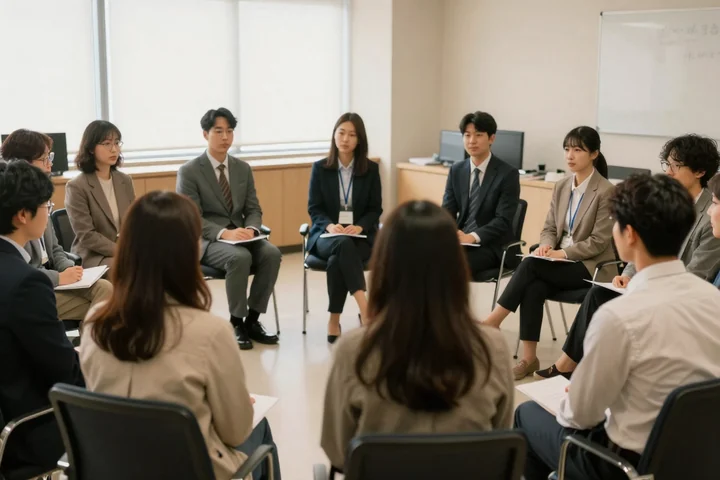
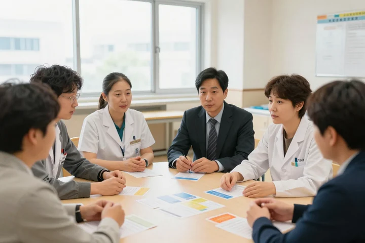
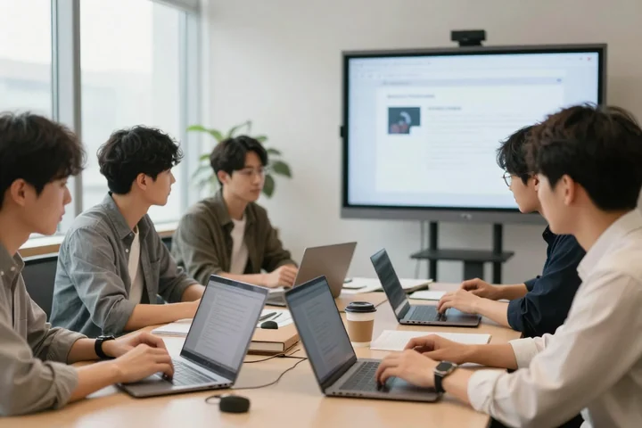
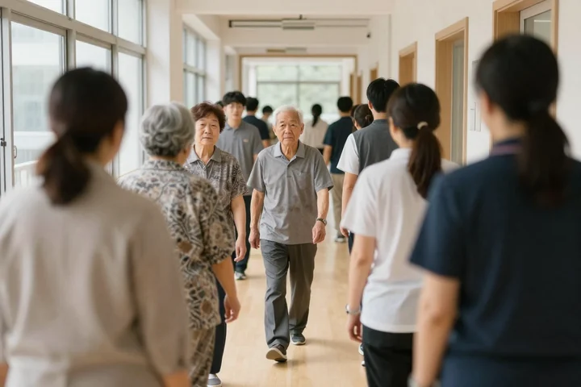
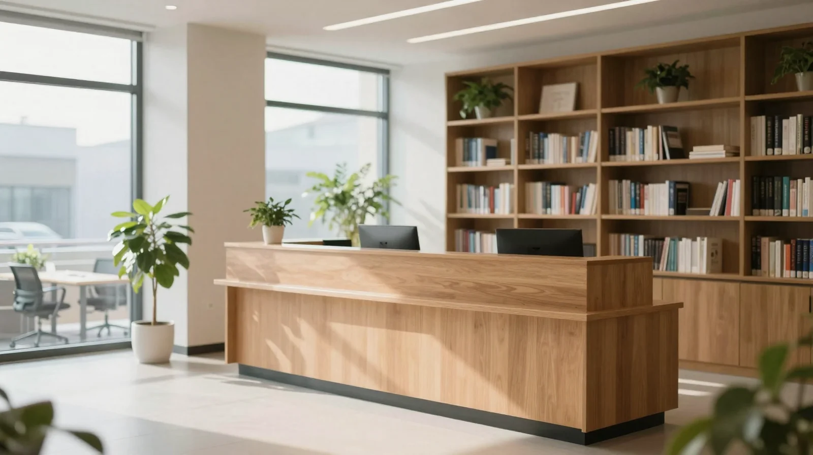
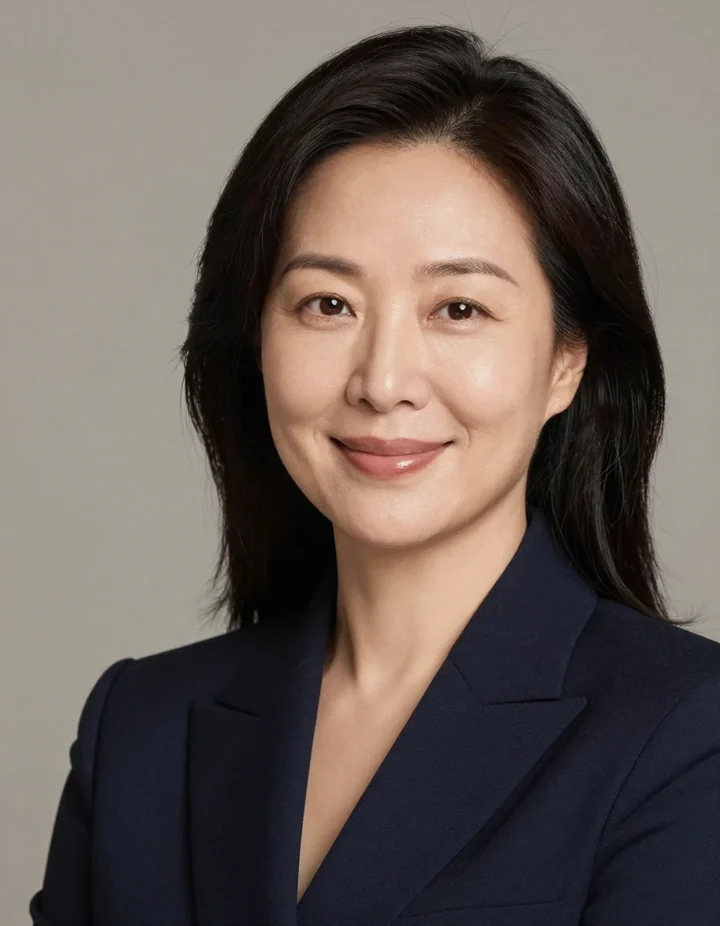
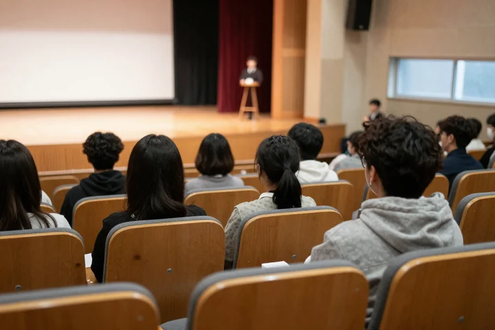

사람이 사람을
성장시킵니다
"20년, 강의실 앞에서 배운 것은 결국 그 한 문장이었습니다"
더알림은 그 문장을 시스템으로 만든 회사입니다. 표준 커리큘럼, 담당자 피드백, 그 피드백으로 다시 고르는 강사. 세 가지가 돌아가야 교육이 한결같습니다.
강사가 아니라
시스템을 믿게 합니다
개인의 재능에 기대지 않습니다. 47개 프로그램 전부 목표·대상·차시·기대효과가 문서로 있습니다. 담당자가 품의에 그대로 붙입니다.
교육이 끝나면 담당자와 수강생에게 따로 묻습니다. 그 답이 강사 평점이 되고, 다음 배정의 근거가 됩니다.
강남본사·경기화성·경북구미 3개 거점, 7개 권역에 공개 강사 1,294명. 원거리 권역은 출강비 기준을 미리 밝힙니다.



진로취업리더십소통
환자경험   4,000기관20년
4,000기관20년

우리의 약속
누가 가든 같은 수준. 표준 커리큘럼과 강사 평점이 그 약속을 지킵니다. 평점 4.3 미만 2회 연속이면 재배치를 검토합니다.
자격은 등록번호·총비용·환불을 표시하고, 숫자에는 산출 기준을 붙이고, 수상에는 주최와 범위를 적습니다.
가르치는 사람이
교육의 전부입니다
그 한 사람을 고르는 일에 20년을 썼습니다.
연혁
"2006년 강의실 하나에서 시작해 3개 거점, 2,000명 네트워크로"

학교에서 기업으로, 기업에서 병원과 공공기관으로. 질문이 늘어날 때마다 센터가 하나씩 생겼습니다.
현재
현행 사이트 3곳(아임웹·그누보드·강사매칭) 통합 리뉴얼 착수
접수·강사·자격 데이터를 하나로충남학원연합회 MOU — 실무형 인재 양성 프로그램 연동
협약환자경험평가 첫 등급 공개 대응 — 병원 메디컬센터 과정 16종 정비
병원2020s
교육부문 혁신리더 대상 (시사매거진 2580)
수상충남·아산시 학원연합회 평생교육 협력 MOU
협약연세대학교 교육대학원 동문교육기관 현판
소비자만족 브랜드 대상 1위 · 강의·교육컨설팅 부문 (JY네트워크 주최 · 중앙일보 후원)
수상한국인재양성협회 민간자격 32종 등록 완료
2010s
경북구미 사무소 개소 — 영남권 거점
병원 메디컬센터 신설 · 환자경험평가 1차 대응 과정
병원경기화성 교육장 개소 · 집체교육 60명
기업 HRD 컨설팅 센터 신설 · 법정의무교육 통합 운영 시작
2000s
누적 출강 기관 500곳
(주)더알림 설립 · 청소년 교육센터 — 특성화고 진로·취업 교육으로 시작
강의실 하나, 강사 열두 명최고의 수상자를 배출해 낸
경험을 시스템으로 옮겼습니다
교육 현장 강의 20년, 약 3,000회. 강사 네트워크 2,000명 구축을 주도하고 전국 기관 출강 4,000여 건을 총괄했습니다.
K-Startup 창업경진대회 본선 멘토로 과기부·국방부 장관상 수상팀을 배출했습니다. 청주사범대와 연세대학교 교육대학원에서 공부했고 정교사 자격을 가지고 있습니다.
더 많은 학교와 기업, 병원에 한결같은 교육으로 보답하겠습니다.


두 협회
교재 · VOD 제작
교육 프로그램을 책과 영상으로 남깁니다.
오시는 길
강남역·양재역에서 도보 7~8분, 뱅뱅사거리. 방문 상담은 전화로 미리 잡아 주세요.
0507-1322-2916 · 월–일 10:00–20:00